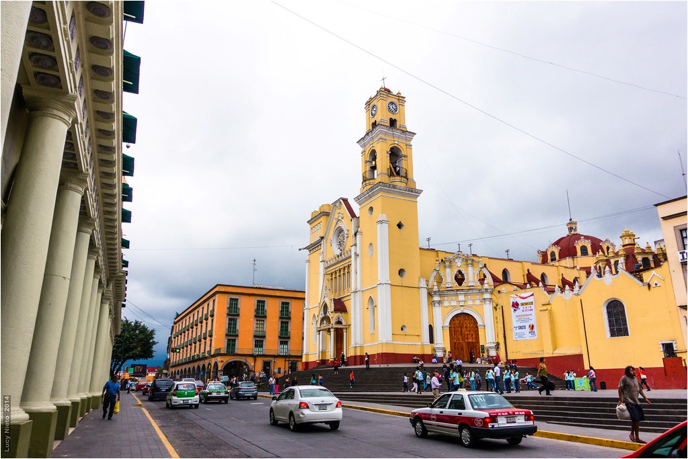
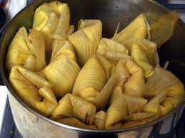
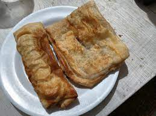
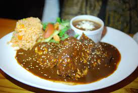

Veracruz is a mexican state with a lot of culture because it shares traits from the indigenous groups before the Spain Conquest in the 1500s but it also shares straits with the French during their invasion in the 1800s. This is noticeable in their food. These are some of those recipes that were influenced in one way or another and enrich the strong culture of not only Veracruz but Mexico.
These tamales are made from young corn and regionally are called tamales de elote con carne others call it bollos or bollitos. It depends on who you ask. They are common for family celebrations and are great for parties.
These volovanes are pastry that are really common in Veracruz. In some cities people sell them in the streets. There are many types too so you can always alternate between one and another. They are good for mornings with coffee or a quick snack you can grab on the way.
Mole is a traditional plate that has been modeled and remodeled over time. It is an original dish and can be found not only in Veracruz but almost in every region from Mexico. There are alot of variations and it really depends on the region you are visiting.
